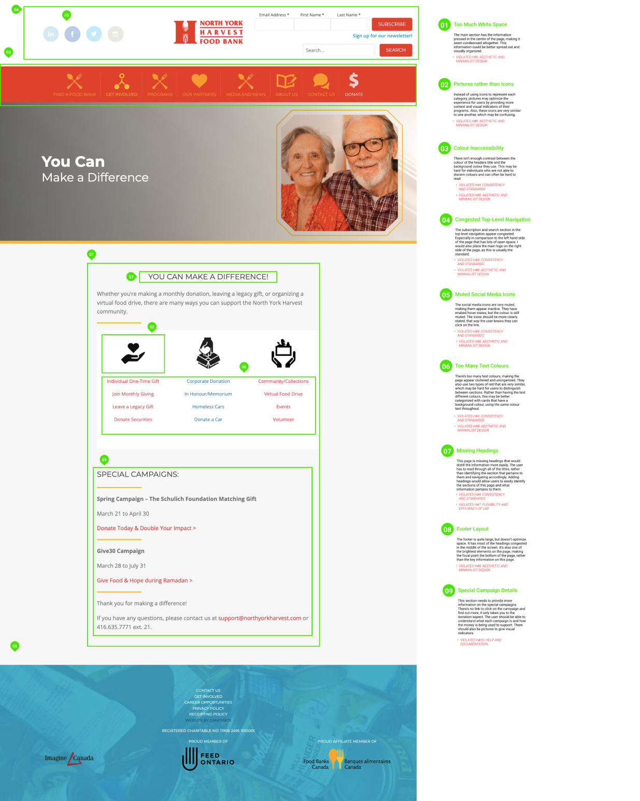
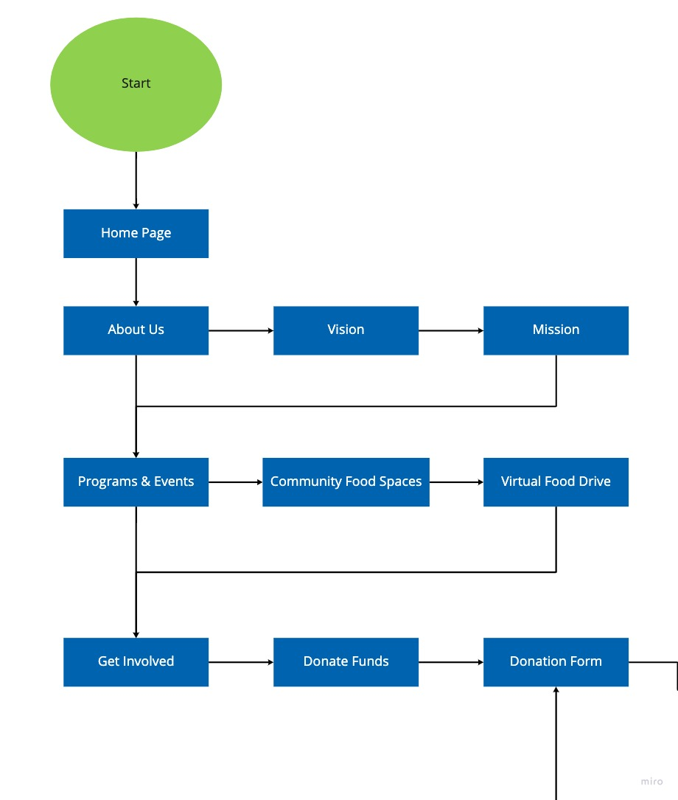
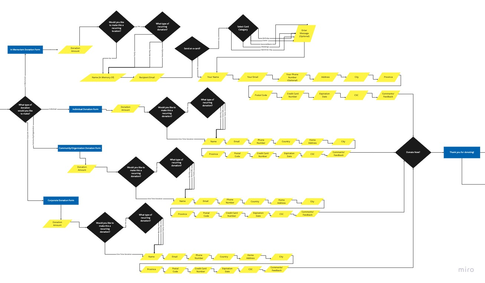
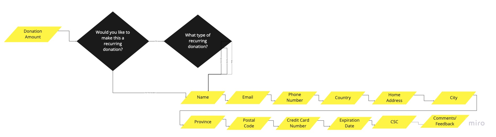
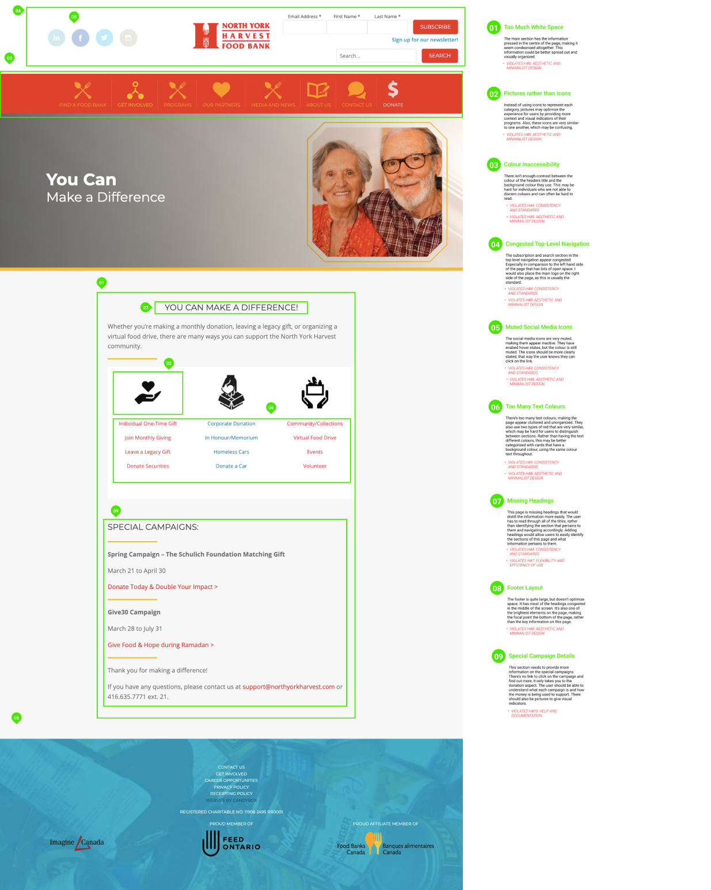
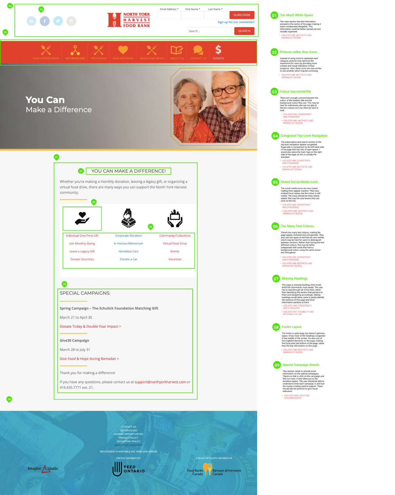

North York Harvest Food Bank is a non-profit organization that targets food insecurity in North York, ON. Their mission is to engage the community in meeting the food needs of northern Toronto by providing dignified food assistance, education, focused advocacy, and long-term food solutions.
Food Banks have a big responsibility to feed the hungy and often do not have the resources or budget to update their website design. This is a major conflict for organizations such as North York Harvest, where their patrons need access to up-to-date information and donors desire a sense of trust with those who are running the charity. This is why we decided to help North York Harvest with a UI redesign that will accurately reflect their cause, increase functionality and present relavent information for those who need access.
We began by researching food bank statistics and found that since the pandemic, the number of people who require a food bank increased while donations decreased. This poses a major issue to food banks such as North York Harvest, who rely heavily on donations to operate their facilities and distribute food.
Proto-Persona
We then created a proto-persona to further understand our audience for the website redesign. Marco Hopkins loves giving back to the community he grew up in.
Unsure of where his donation money is spent or how well it is utilized. He expects more information and transparency which is missing, affecting his motivation to donate.
Survey
We sent our a survey to gain general data and found the following key insights:
User Interviews
Affinity Diagram
Empathy Map
Competitor Analysis
Heuristic Evaluation

Problem Statement
NYH Food bank was founded with the mission to feed the needy and hungry by partnering with few organizations and monetary donations from the public. We have observed that our NGO isn't receiving as much donations and supplies as we had expected, due to suspicion, doubt and lack of information.
This gap in the rising demand and low supply of food and other necessary items is causing people to drift away from us, both in terms of giving donations and receiving help.
How might we improve our website to include information that attracts more donors so that our customers' needs are met and they are able to turn to us in times of crisis and need?
Ideation
Anim pariatur cliche reprehenderit, enim eiusmod high life accusamus terry richardson ad squid. 3 wolf moon officia aute, non cupidatat skateboard dolor brunch. Food truck quinoa nesciunt laborum eiusmod. Brunch 3 wolf moon tempor, sunt aliqua put a bird on it squid single-origin coffee nulla assumenda shoreditch et. Nihil anim keffiyeh helvetica, craft beer labore wes anderson cred nesciunt sapiente ea proident. Ad vegan excepteur butcher vice lomo. Leggings occaecat craft beer farm-to-table, raw denim aesthetic synth nesciunt you probably haven't heard of them accusamus labore sustainable VHS.
Anim pariatur cliche reprehenderit, enim eiusmod high life accusamus terry richardson ad squid. 3 wolf moon officia aute, non cupidatat skateboard dolor brunch. Food truck quinoa nesciunt laborum eiusmod. Brunch 3 wolf moon tempor, sunt aliqua put a bird on it squid single-origin coffee nulla assumenda shoreditch et. Nihil anim keffiyeh helvetica, craft beer labore wes anderson cred nesciunt sapiente ea proident. Ad vegan excepteur butcher vice lomo. Leggings occaecat craft beer farm-to-table, raw denim aesthetic synth nesciunt you probably haven't heard of them accusamus labore sustainable VHS.
Anim pariatur cliche reprehenderit, enim eiusmod high life accusamus terry richardson ad squid. 3 wolf moon officia aute, non cupidatat skateboard dolor brunch. Food truck quinoa nesciunt laborum eiusmod. Brunch 3 wolf moon tempor, sunt aliqua put a bird on it squid single-origin coffee nulla assumenda shoreditch et. Nihil anim keffiyeh helvetica, craft beer labore wes anderson cred nesciunt sapiente ea proident. Ad vegan excepteur butcher vice lomo. Leggings occaecat craft beer farm-to-table, raw denim aesthetic synth nesciunt you probably haven't heard of them accusamus labore sustainable VHS.
Anim pariatur cliche reprehenderit, enim eiusmod high life accusamus terry richardson ad squid. 3 wolf moon officia aute, non cupidatat skateboard dolor brunch. Food truck quinoa nesciunt laborum eiusmod. Brunch 3 wolf moon tempor, sunt aliqua put a bird on it squid single-origin coffee nulla assumenda shoreditch et. Nihil anim keffiyeh helvetica, craft beer labore wes anderson cred nesciunt sapiente ea proident. Ad vegan excepteur butcher vice lomo. Leggings occaecat craft beer farm-to-table, raw denim aesthetic synth nesciunt you probably haven't heard of them accusamus labore sustainable VHS.
Anim pariatur cliche reprehenderit, enim eiusmod high life accusamus terry richardson ad squid. 3 wolf moon officia aute, non cupidatat skateboard dolor brunch. Food truck quinoa nesciunt laborum eiusmod. Brunch 3 wolf moon tempor, sunt aliqua put a bird on it squid single-origin coffee nulla assumenda shoreditch et. Nihil anim keffiyeh helvetica, craft beer labore wes anderson cred nesciunt sapiente ea proident. Ad vegan excepteur butcher vice lomo. Leggings occaecat craft beer farm-to-table, raw denim aesthetic synth nesciunt you probably haven't heard of them accusamus labore sustainable VHS.

Onboarding

Donation Process

Donation Form


 
